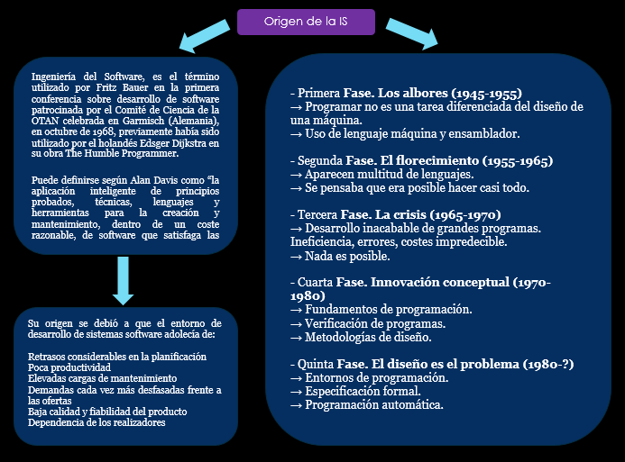
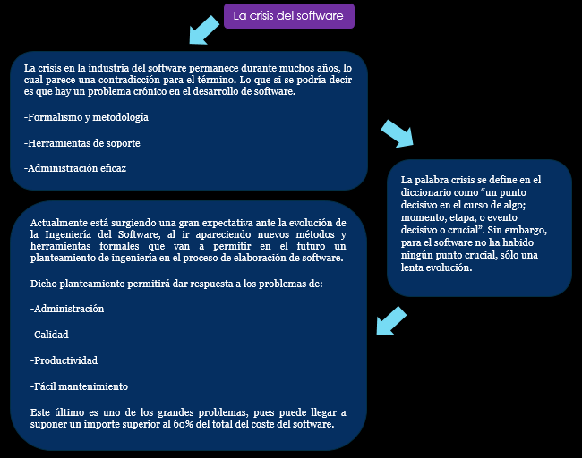
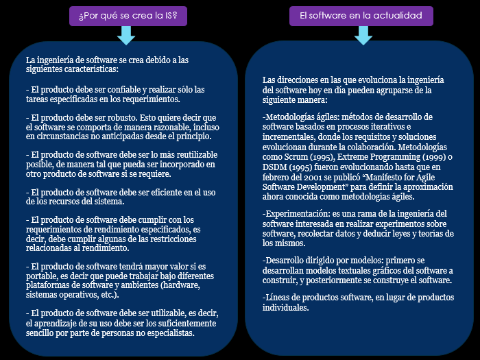
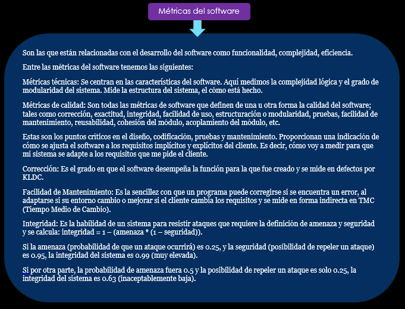
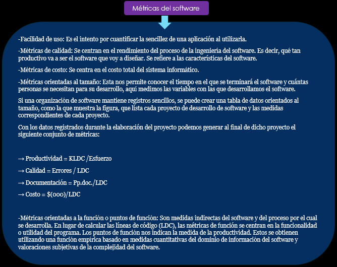
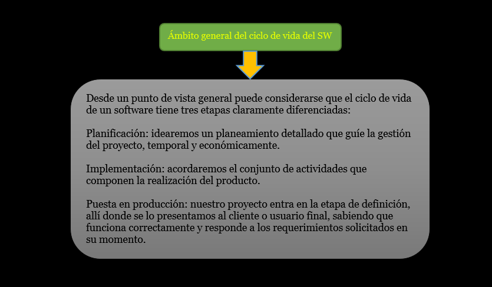
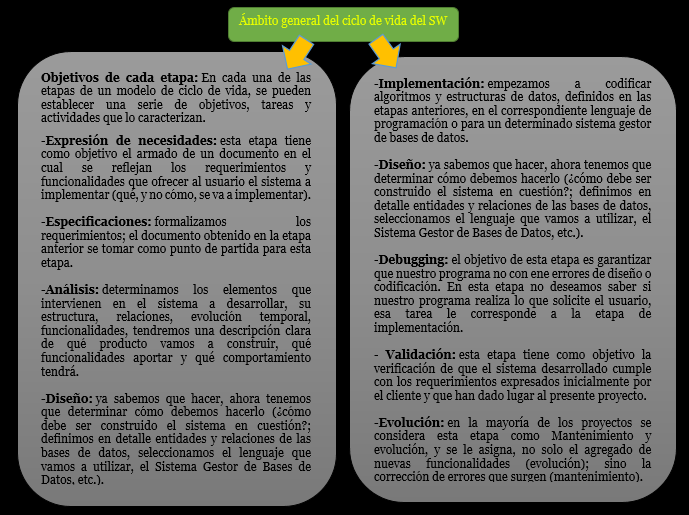

Fundamentos de la Ingeniería de Software(IS)
Definición de IS
La ingeniería de software es una aplicación práctica del conocimiento cientifico para proveer metodologías y técnicas que ayuden a desarrollar sistemas de software a tiempo, y a su vez que aseguren que el desarrollador cumpla con las expectativas de calidad y permanezca dentro del presupuesto.


La evolución del software
El término “evolución” del software se utiliza desde los sesenta para denominar la dinámica de crecimiento del software.
Ned Chapin (1999) lo definió como “la aplicación de las actividades y procesos de mantenimiento del software que generan una nueva versión operativa de un software con una funcionalidad de usuario o propiedades cambiadas a partir de una versión anterior […] junto con los procesos y actividades de garantia de calidad y con la gestión de esos procesos”. De estas definiciones se desprende que la evolución cubre el ajuste a funcionalidades adicionales.


Procesos de Ingeniería de Software
Factores de calidad del software
Concepto de Calidad: Conjunto de propiedades y de características de un producto o servicio, que le confieren aptitud para satisfacer una necesidad explícita o implícita (ISO 8402).
Calidad del Software: Es el grado con el que un sistema, componente o proceso cumple los requerimientos especificados y las necesidades o expectativas del cliente o usuario.
Los factores que determinan la calidad del software se puede clasificar en dos grandes grupos (Pressman):
Medidas Directas: La medida o medición decimos que es directa, cuando disponemos de un instrumento de medida que nos muestra un resultado (generalmente numérico).
Medidas Indirectas: Cuando hablamos de sistemas informáticos no siempre es posible realizar una medida directa, porque no disponemos del instrumento adecuado que nos permita realizar esa medición.

Por ejemplo, dados los siguientes valores de un paquete de base de datos en dos proyectos, podemos calcular la integridad.

Solución:
→ Integridad para el proyecto 1:
Integridad = 1 – 0.7 * (1 – 0) = 0.3
→ Integridad para el proyecto 2:
Integridad = 1 – 0.2 * (1 - 0.8) = 0.96


Problemas en el desarrollo de software
¿Qué es un proyecto software?
Haciendo uso de la definición de proyecto de la guía del PMBOK, y adaptándola a un proyecto software, podríamos definirlo como: “Un proyecto software es un esfuerzo temporal que se lleva a cabo para crear un producto software, servicio TI o resultado único.”
¿Pero que es el software?
Según la definición del IEEE, “software es la suma total de los programas de ordenador, procedimientos, reglas, la documentación asociada y los datos que pertenecen a un sistema de cómputo”, y “un producto de software es un producto diseñado para un usuario”.
El software puede dividirse en dos grandes categorías:
- Software de aplicaciones: Se usan para proveer servicios a clientes y ejecutar negocios de forma más eficiente. El software de aplicaciones puede ser un sistema pequeño o uno grande integrado. Como ejemplos de este tipo de software estarían un sistema de cuentas, un sistema de planificación de recursos...
- Software de sistemas: El software de sistemas se usa para operar y mantener un sistema informático. Permite a los usuarios usar los recursos del ordenador directamente y a través de otro software. Algunos ejemplos de este tipo de software son los sistemas operativos, compiladores y otras utilidades del sistema.
Ingeniería del software
Los proyectos software tienen características específicas que los hacen diferentes de otros proyectos de ingeniería.
La Ingeniería del Software es la rama de la ingeniería que crea y mantiene las aplicaciones de software usando tecnologías y prácticas de las ciencias de la computación, manejo de proyectos, ingeniería, el ámbito de la aplicación, y otros campos.
¿Por qué el software es diferente a cualquier otro proceso de fabricación? Podríamos identificar los siguientes motivos:
El software se desarrolla, no se fabrica en el setido clásico de la palabra. Ambas actividades se dirigen a la construcción de un "producto", pero los métodos son diferentes. Los costes del software se encuentran en la ingeniería, esto implica que los proyectos no se pueden gestionar como si lo fueran de fabricación.
La juventud de la ingeniería del software con respecto a otras ingenierías, la mayoría del software se construye a medida, en vez de ensamblar componentes previamente creados. Aunque ya se están dando importantes pasos en esta dirección, que facilitaría en gran medida el desarrollo de aplicaciones informáticas.
En el software, el recurso principal son las personas. No es siempre posible acelerar la construcción de software añadiendo personas porque la construcción de software requiere un esfuerzo en equipo. El equipo tiene que trabajar de forma coordinada y comparrir un objetivo de proyecto común. Se necesita comunicación efectiva dentro del equipo.
El software no se estropea, pero se deteriora. Durante su vida, el software sufre cambios (mantenimiento). Conforme se hacen los cambios, es bastante probable que se introduzcan nuevos defectos, lo que hace que el software se vaya deteriorando debido a estos cambios.

Tipos de mantenimiento:
Correctivo. El programa no funciona correctamente, hay que modificarlo.
Perfectivo. Se modifica el programa para obtener más eficiencia o nuevas funcionalidades no especificadas en la definición del sistema.
Adaptativo. Adaptar el programa a los cambios en su entorno (cambio de SO, de CPU, de legislación, …)
Preventivo. El software se deteriora con los cambios, este mantenimiento hace cambios para que los programas se puedan corregir, adaptar y mejorar más rápidamente -> Reingeniería del SW.

Responsabilidad ética y profesional en ingeniería del software
La IS se realiza dentro de un marco social y legal que limita la libertad de la gente que trabaja en dicha área.
Los ingenieros de software:
Deben aceptar que su labor implica responsabilidades mayores que la simple aplicación de habilidades técnicas.
Deben comportarse de forma éDca y moralmente responsable para ser respetado como un ingeniero profesional.
Existen áreas donde los estándares de comportamiento aceptable no están acotados por las leyes, sino por la responsabilidad profesional, algunas de estas son:
Confidencialidad. Respetar la confidencialidad de sus empleadores o clientes, independientemente de que se haya firmado un acuerdo formal de confidencialidad.
Competencia. No debe falsificar su nivel de competencia, ni aceptar conscientemente trabajos que están fuera de su capacidad.
Derechos de propiedad intelectual. Debe ser consciente de las leyes locales que gobiernan el uso de la propiedad intelectual, como las patentes el el copyright. Debe asegurarse de que la propiedad intelectual de los empleadores y clientes está protegida.
Uso inapropiado de las computadoras. No debe emplear sus habilidades técnicas para utilizar de forma inapropiada las computadoras de otras personas. Desde los relativamente triviales (utilizar juegos en las maquina de un empleado, por ejemplo) hasta los extremadamente serios (difusión de virus).
Código de ética (ACM/IEEE)
Los ingenieros de software deberán comprometerse consigo mismo en convertir el análisis, especificación, diseño, desarrollo, prueba y mantenimiento de software en una profesión respetable y beneficiosa.
De acuerdo con su compromiso con la salud, seguridad y bienestar del público, los ingenieros de software deberán apegarse a ocho principios.
Público. Los ingenieros de software deberán actuar consistentemente con el interés público.
Cliente y Empleador. Los ingenieros de software deberán actuar de una forma determinada que esté en los mejores intereses de su cliente y empleador consistente con el interés público.
Producto. Los ingenieros de software deberán asegurar que sus productos y modificaciones relacionadas logren el más alto estándar profesional posible.
Juicio. Los ingenieros de software deberán mantener integridad e independencia al emitir su juicio profesional.
Gerencia. Los gerentes y lideres de ingeniería de software deberán suscribirse y promocionar un enfoque ético para la gerencia de desarrollo y mantenimiento del software.
Profesión. Los ingenieros de software deberán fomentar la integridad y reputación de la profesión consistente con el interés público.
Colegas. Los ingenieros de software deberán ser justos y
comprensivos con sus colegas.
Interés Propio. Los ingenieros de software deberán participar en el aprendizaje de por vida del ejercicio de su profesión y deberán promover un enfoque ético para el ejercicio de la misma.


Los sistemas de información, según Peña (2006), tienen 5
elementos importantes, estos son:
→ Financieros.
→ Administrativos.
→ Humanos.
→ Materiales.
→ Tecnológicos.
Otro autor desconocido (s/a, 2008b) plantea que un sistema de
información está compuesto por 6 elementos claramente
identificables, tal y como se muestran en la siguiente figura:

Base de Datos: Es donde se almacena toda la información que
se requiere para la toma de decisiones. La información se
organiza en registros específicos e identificables;
Transacciones: Corresponde a todos los elementos de interfaz
que permiten al usuario: consultar, agregar, modificar o eliminar
un registro específico de Información;
Informes: Corresponden a todos los elementos de interfaz
mediante los cuales el usuario puede obtener uno o más
registros y/o información de tipo estadístico (contar, sumar) de
acuerdo a criterios de búsqueda y selección definidos.
Procesos: Corresponden a todos aquellos elementos que, de
acuerdo a una lógica predefinida, obtienen información de la
base de datos y generan nuevos registros de información. Los
procesos sólo son controlados por el usuario (de ahi que
aparezca en línea de puntos);
Usuario: Identifica a todas las personas que interactúan con el
sistema, esto incluye desde el máximo nivel ejecutivo que
recibe los informes de estadísticas procesadas, hasta el usuario
operativo que se encarga de recolectar e ingresar la información
al sistema y
Procedimientos Administrativos: Corresponde al conjunto de
reglas y políticas de la organización, que rigen el
comportamiento de los usuarios frente al sistema.
Particularmente, debieran asegurar que nunca, bajo ninguna
circunstancia un usuario tenga acceso directo a la Base de
Datos.
Proceso del Software
El proceso de SW
Es el conjunto de actividades necesarias para transformar las ideas iniciales del usuario, que desea automatizar un determinado trabajo, en software.
Muchos de los procesos de software son diferentes, pero todos implican:
Especificación.
Diseño e implementación.
Validación.
Evolución.


Estándares relacionados con el proceso de SW: Estándar ISO/IEC/IEEE 12207:2017
El estándar ISO/IEC/IEEE 12207 2017 [ISO/IEC/ 2017 relativo
a los procesos del ciclo de vida del software
Se aplica a la adquisición de sistemas de software , productos y servicios, al suministro, desarrollo, operación, mantenimiento y eliminación de productos de software o componentes de software de cualquier sistema, ya sea que se realice interna o externamente a una organización.
Se incluyen aquellos aspectos de la definición del sistema necesarios para proporcionar el contexto de los productos y servicios de software.
También proporciona procesos que pueden emplearse para
definir, controlar y mejorar los procesos del ciclo de vida del
software dentro de una organización o de un proyecto.
Esta norma no fomenta o especifica ningún modelo concreto de ciclo de vida, gestión del software o método de ingeniería, ni prescribe cómo realizar ninguna de las actividades.
El ciclo de vida del Software

Cuando un proceso implica la construcción de algún producto, suele referirse al proceso como un ciclo de vida
El proceso de desarrollo de software suele denominarse ciclo de vida del software.
La evolución del software representa el ciclo de actividades involucradas en el desarrollo, uso y mantenimiento de sistemas software [Scacchi, 1987].
Los proyectos software se desarrollan en una serie de fases
Van desde la concepción del software y su desarrollo inicial hasta su puesta en funcionamiento y posterior retirada por otra nueva generación de software.
Estas fases pueden ser:
- Temporales:
→ Forman una secuencia en el tiempo.
- Lógicas:
→ Cuando representan pasos o etapas que no constituyen una secuencia temporal.
Se puede definir ciclo de vida del software como:
Las distintas fases por las que pasa el software desde que nace una necesidad de mecanizar un proceso hasta que deja de utilizarse el software que sirvió para ese objetivo, pasando por las fases de desarrollo y explotación [Frakes et al., 1991]
Ámbito general del ciclo de vida del SW


Razones para modelar un proceso de SW
Cuando se pone por escrito una descripción de un proceso, se da forma a una comprensión común de las actividades, recursos y restricciones relacionados con el desarrollo del software.
Ayuda al equipo de desarrollo a encontrar las inconsistencias, las redundancias y las omisiones en el proceso y en las partes que lo constituyen.
El modelo debe reflejar las metas del desarrollo. A medida que se construye el modelo el equipo de desarrollo eval a las actividades candidatas por su adecuación para alcanzar dichas metas.
Ayuda al equipo de desarrollo a comprender dónde debe adaptarse el proceso.
Los modelos de proceso de desarrollo de software incluyen los requisitos del sistema como entrada y un producto entregado como salida.
Modelo general de proceso en Ingeniería
Especificación: formulación de los requisitos y restricciones del sistema.
Diseño: elaboración de un documento con el modelo del sistema.
Fabricación: construcción del sistema.
Prueba: comprobación de que el sistema cumple las especificaciones requeridas.
Instalación: entrega del sistema al cliente y garantía de que es operativo.
Mantenimiento: reparación de los fallos que aparecen en el sistema.
En el proceso de construcción de sistemas informáticos se pueden distinguir tres fases genéricas:

Modelo de procesos de software
El modelo de cascada

Las fases están identificadas por separado:
El análisis y definición de requerimientos
Diseño del sistema y software.
Pruebas de implementación de unidades
Integración y pruebas del sistema
Operación y mantenimiento
El principal inconveniente del modelo de la cascada es la dificultad de acomodar el cambio después de que está en marcha el proceso. En principio, una fase tiene que ser completada antes de pasar a la siguiente fase.
Problemas del modelo cascada:
→ Inflexible división del proyecto en fases distintas hace que sea difícil responder a las necesidades cambiantes de los clientes.
→ Por lo tanto, este modelo sólo es apropiado cuando los requisitos son bien entendidos y los cambios serán bastante limitados durante el proceso de diseño.
→ Pocos sistemas tienen requisitos estables.
→ El modelo de cascada se utiliza sobre todo para los grandes proyectos de ingeniería de sistemas en que un sistema se desarrolla en varios lugares.
Desarrollo incremental

Beneficios:
El costo de atender las necesidades cambiantes de los clientes se reduce.
La cantidad de análisis y la documentación que tiene que ser hecho de nuevo es mucho menor que la que se requiere con el modelo de cascada.
Es más fácil obtener retroalimentación de los clientes en el trabajo de desarrollo que se ha hecho.
Los clientes pueden hacer comentarios sobre las manifestaciones del software y ver cuánto se ha implementado.
Problemas:
El proceso no es visible.
Los gerentes necesitan entregas regulares para medir el progreso. Si se desarrollan rápidamente los sistemas, no es rentable para producir documentos que reflejen todas las versiones del sistema.
Estructura del sistema tiende a degradarse a medida que se añaden nuevos incrementos.
A menos tiempo y dinero que se gasta en la refactorización para mejorar el software, cambio regular tiende a corromper su estructura. La incorporación de nuevos cambios de software se vuelve cada vez más difícil y costoso.
Espiral

Definición:
Es un modelo de ciclo de vida desarrollado por Barry Boehm en 1988. Las actividades de este modelo son una espiral, cada bucle es una actividad. Las actividades no están fijadas a prioridad, sino que las siguientes se eligen en función del análisis de riesgo, comenzando por el bucle interior.
Principios básicos:
Decidir qué problema se quiere resolver antes de viajar a resolverlo.
Examinar tus múltiples alternativas de acción y elegir una de las más convenientes.
Evaluar qué tienes hecho y qué tienes que haber aprendido después de hacer algo.
No ser tan ingenuo para pensar que el sistema que estás construyendo será "EL" sistema que el cliente necesita, Conocer (comprender) los niveles de riesgo, que tendrás que tolerar.
Caracteristicas:
En cada giro se construye un nuevo modelo del sistema completo.
Este modelo puede combinarse con otros modelos de proceso de desarrollo (cascada, evolutivo).
Mejor modelo para el desarrollo de grandes sistemas.
El análisis de riesgo requiere la participación de personal altamente calificado.
Ventajas:
El modelo en espiral puede adaptarse y aplicarse a lo largo de la vida del software de computadora.
Como el software evoluciona a medida que progresa el proceso, el desarrollador y el cliente comprenden y reaccionan mejor ante riesgos en cada uno de los nivele evolutivos.
El modelo en espiral permite a quien lo desarrolla aplicar el enfoque de construcción de prototipos en cualquier etapa de evolución del producto.
El modelo en espiral demanda una consideración directa de los riesgos técnicos en todas las etapas del proyecto y si se aplica adecuadamente debe reducir los riesgos antes de que se conviertan en problemas.
En la utilización de grandes sistemas a doblado la productividad.
Desarrollo rápido de aplicaciones (DRA)

Definición:
Es un modelo de proceso del ciclo de vida clásico que enfatiza un ciclo de vida de desarrollo extremadamente corto.
El modelo DRA es una adaptación a alta velocidad del ciclo de vida clásico en el que se logra el desarrollo rápido utilizando un enfoque de construcción basado en componentes. Si se comprenden bien los requisitos y se limita el ámbito del proyecto, el proceso DRA permite al equipo de desarrollo crear un sistema completamente funcional dentro de períodos cortos de tiempo.
Cuando se utiliza principalmente para aplicaciones de sistemas de información, el enfoque DRA comprende las siguientes fases:
Modelado de gestión: El flujo de información entre las funciones de gestión se modela de forma que responda a las siguientes preguntas: ¿Qué información conduce el proceso de gestión? ¿Qué información se genera? ¿Quién la genera? ¿A dónde va la información? ¿Quién la procesa?
Modelado de datos: El flujo de información definido como parte de la fase de modelado de gestión refina como un conjunto de objetos de datos necesarios para apoyar la empresa.
Modelado de procesos: Los objetos de datos definidos en la fase de modelado de datos quedan transformados para lograr el flujo de información necesario para implementar una función de gestión. Las descripciones se crean para añadir, modificar, suprimir, o recuperar un objeto de datos.
Generación de aplicaciones: El DRA asume la utilización de técnicas de cuarta generación. En lugar de crear software con lenguajes de programación de tercera generación, el proceso DRA trabaja para volver a utilizar componentes de programas ya existentes (cuando es posible) o a crear componentes reutilizables (cuando sea necesario). En todos los casos se utilizan herramientas automáticas para facilitar.
Prueba y entrega: Como el proceso DRA enfatiza la reutilización, ya se han comprobado muchos de los componentes de los programas. Esto reduce tiempo de pruebas. Sin embargo, se deben probar todos los componentes nuevos y se deben ejercitar todas las interfaces a fondo.
Limitaciones:
Las limitaciones de tiempo impuestas en un proyecto DRA demandan ámbito en escalas.
Si una aplicación de gestión puede modularse de forma que permita completarse cada una de las funciones principales en menos de tres meses, es el candidato del DRA.
Cada una de las funciones puede ser afrontada por un equipo DRA diferente y ser integradas en un solo conjunto.
Problemas:
Para proyectos grandes aunque por escalas, el DRA requiere recursos humanos suficientes como para crear el número correcto de equipos DRA.
DRA requiere clientes y desarrolladores comprometidos en las rápidas actividades necesarias para completar un sistema en un marco de tiempo abreviado. Si no hay compromiso, por ninguna de las partes constituyentes, los proyectos DRA fracasarán.
No todos los tipos de aplicaciones son apropiados para DRA.
Si un sistema no puede modularizarse adecuadamente, la construcción de los componentes necesarios para DRA será problemático.
Si está en juego el alto rendimiento, y se va a conseguir el rendimiento convirtiendo interfaces en componentes de sistemas, el modelo DRA puede que no funcione.
Si está en juego el alto rendimiento, y se va a conseguir el rendimiento convirtiendo interfaces en componentes de sistemas, el modelo DRA puede que no funcione.
DRA no es adecuado cuando los riesgos técnicos sona ltos.
DRA enfatiza el desarrollo de componentes de programas reutilizables.
Orientado a la reutilización

Definición:
Esta aproximación se basa en la existencia de un número significativo de elementos reutilizables. El proceso de desarrollo, se centra en la integración de estos elementos en un sistema, en lugar de desarrollarlo desde cero.
Incorpora muchas características del modelo en espiral. Es evolutivo por naturaleza.
El proceso tiende a estructurarse en dos subprocesos distintos y separados:
El desarrollo para reutilización: construcción de elementos reutilizables dentro de un dominio concreto.
El desarrollo con reutilización: construcción de aplicaciones utilizando elementos reutilizables.
Etapas del proceso:
→ Análisis de los componentes
→ Requisitos de modificación;
→ Configuración del sistema con la reutilización
→ Desarrollo e integración.
La reutilización es ahora el enfoque estándar para la construcciónde muchos tipos de sistemas de negocio.
Orientados a objetos

Definición:
El modelo orientado a objetos utiliza el paradigma de la orientación a objetos para el desarrollo de software.
Este enfoque realiza la construcción de modelos de un sistema por medio de la identificación y la especificación de un conjunto de objetos relacionados, que colaboran entre si de acuerdo a los requerimientos establecidos para el sistema de objetos.
Caracteristicas
EL modelado Orientado a Objetos está basado en el paradigma orientado a objetos.
Trata el almacenamiento de objetos (persistencia de los objetos).
Define un lenguaje para le definición y manipulación de objetos.
Incluye mecanismos para optimizar el acceso (Indexación y Clustering), el control de la concurrencia, seguridad y gestión de usuarios, facilidad de consulta y recuperación ante fallos.